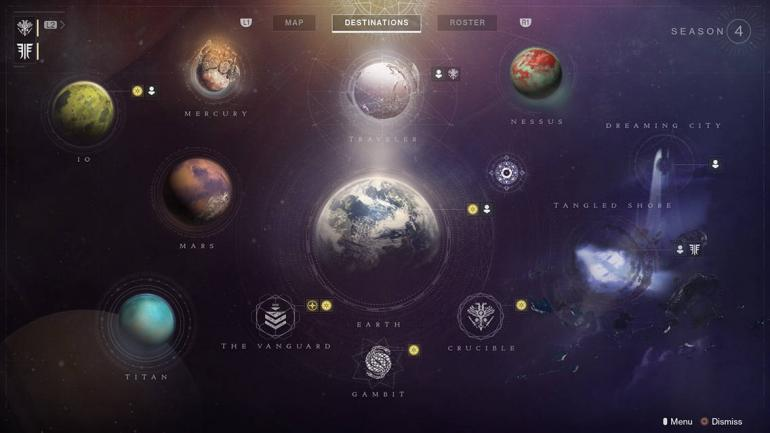
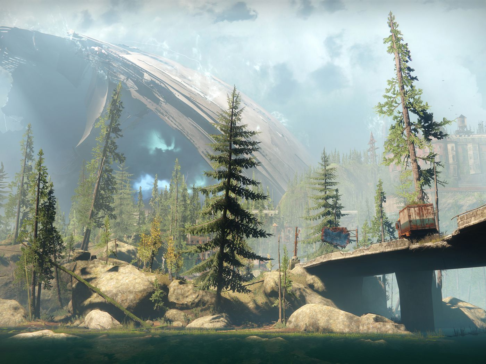
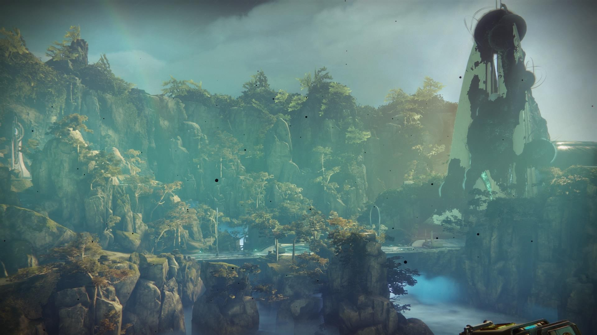
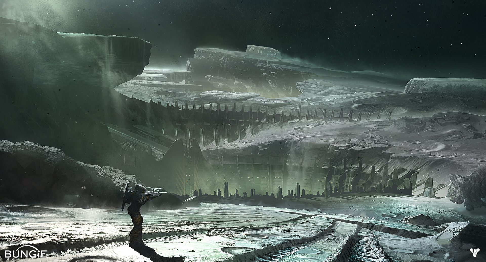

In Destiny you had the options of exploring Earth, Mars, the Moon, Venus, the Dreadnaught and two social spaces which were the reef and the tower.

With Destiny came new areas to explore along with older ones that carried on from the first these areas are Earth, Mars, Titan, Io, Mercury, The Moon, Nessus,The Dreaming City, The Tangled Shore and two social spaces which are the traveler and the farm on Earth.
Here are what some of these locations look like when you enter/land on them.
Earth:
Dreaming City:
Titan:

Moon:
